ЗАДНЕЕ СИДЕНЬЕ № 1 В СБОРЕ (складываемое вдвое раздельное сиденье 60/40 с левой стороны) > ПОВТОРНАЯ СБОРКА |
| 1. УСТАНОВИТЕ ЭЛЕМЕНТ ЗАЩИТЫ ЛЕВОГО ЗАДНЕГО СИДЕНЬЯ № 1 |
Введите в зацепление захват, чтобы закрепить элемент защиты.
| 2. УСТАНОВИТЕ ЭЛЕМЕНТ ЗАЩИТЫ ПРАВОГО ЗАДНЕГО СИДЕНЬЯ № 1 |
Введите в зацепление захват, чтобы закрепить элемент защиты.
| 3. УСТАНОВИТЕ КРАЕВОЕ УКРЕПЛЕНИЕ СПИНКИ ЗАДНЕГО СИДЕНЬЯ |
Установите защитный элемент на каркас спинки сиденья.
| 4. УСТАНОВИТЕ ОБИВКУ СПИНКИ ЛЕВОГО РАЗДЕЛЬНОГО ЗАДНЕГО СИДЕНЬЯ |
| 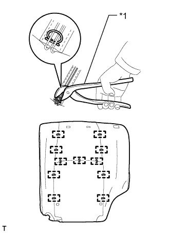 |
Установите обивку на подушку спинки сиденья и закрепите ее новыми витковыми пружинами, используя щипцы для витковых пружин.
| *1 | Щипцы для витковых пружин |
| 5. УСТАНОВИТЕ ОБИВКУ СПИНКИ СИДЕНЬЯ ВМЕСТЕ С ПОДУШКОЙ |
| 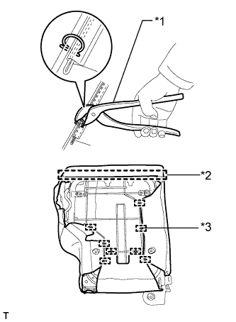 |
Введите в зацепление крюк.
| *1 | Щипцы для витковых пружин |
| *2 | Крюк |
| *3 | Витковая пружина |
Используя щипцы для витковых пружин, закрепите обивку спинки сиденья с подушкой новыми витковыми пружинами.
| 6. УСТАНОВИТЕ ДЕРЖАТЕЛЬ ПОДГОЛОВНИКА ЗАДНЕГО СИДЕНЬЯ № 1 В СБОРЕ |
Введите в зацепление 4 захвата, чтобы закрепить 2 держателя.
| 7. УСТАНОВИТЕ ИЗОЛИРУЮЩУЮ ВТУЛКУ КНОПКИ ОСТАНОВА СПИНКИ ЗАДНЕГО СИДЕНЬЯ |
Зацепите 3 захвата, чтобы закрепить втулку.
| 8. УСТАНОВИТЕ КНОПКУ РАЗБЛОКИРОВКИ ЗАМКА СПИНКИ ЗАДНЕГО СИДЕНЬЯ |
| 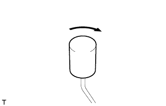 |
Установите кнопку разблокировки, как показано на рисунке.
 | По часовой стрелке |
| 9. УСТАНОВИТЕ ЗАМОК СПИНКИ ЛЕВОГО ЗАДНЕГО СИДЕНЬЯ В СБОРЕ |
| 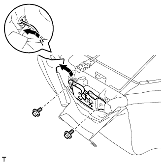 |
Перемещая кнопку разблокировки в направлении, указанном на рисунке стрелкой, присоедините ее к втулке.
Закрепите замок спинки сиденья 2 болтами.
| 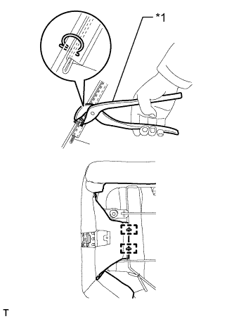 |
С помощью щипцов для витковых пружин установите 2 новые витковые пружины.
| *1 | Щипцы для витковых пружин |
| 10. УСТАНОВИТЕ КРЫШКУ ЗАМКА СПИНКИ ЛЕВОГО ЗАДНЕГО СИДЕНЬЯ |
| 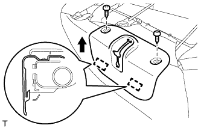 |
Введите в зацепление 2 крепления, чтобы установить обивку.
Заверните 2 винта.
| 11. УСТАНОВИТЕ ВНУТРЕННЮЮ ОТКИДНУЮ КРЫШКУ ЛЕВОГО ЗАДНЕГО СИДЕНЬЯ |
| 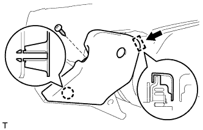 |
Введите в зацепление направляющую и захват, чтобы установить крышку.
Вверните винт.
| 12. УСТАНОВИТЕ ЗАМОК РЕМНЯ БЕЗОПАСНОСТИ ЛЕВОГО ЗАДНЕГО СИДЕНЬЯ № 1 В СБОРЕ |
Установите замок ремня безопасности и закрепите его болтом.
| 13. УСТАНОВИТЕ НАКЛАДКУ НОЖКИ ЗАДНЕГО СИДЕНЬЯ |
| 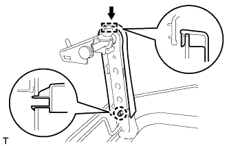 |
Введите в зацепление направляющую и захват, чтобы установить крышку.
| 14. УСТАНОВИТЕ ЩИТОК КРОНШТЕЙНА НОЖКИ ЗАДНЕГО СИДЕНЬЯ |
| 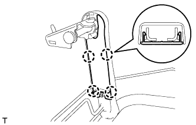 |
Введите в зацепление 4 захвата, чтобы установить щиток.
| 15. УСТАНОВИТЕ ХОМУТ ПОДУШКИ ЗАДНЕГО СИДЕНЬЯ |
| 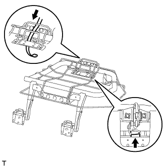 |
Установите хомут, как показано на рисунке.
| 16. УСТАНОВИТЕ ОБИВКУ ПОДУШКИ РАЗДЕЛЬНОГО ЛЕВОГО ЗАДНЕГО СИДЕНЬЯ |
| 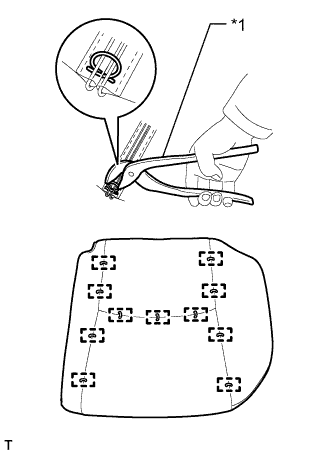 |
Установите обивку подушки сиденья на подушку сиденья и закрепите ее новыми витковыми пружинами, используя щипцы для витковых пружин.
| *1 | Щипцы для витковых пружин |
| 17. УСТАНОВИТЕ ОБИВКУ ПОДУШКИ ЛЕВОГО СИДЕНЬЯ № 1 |
Закрепите обивку на подушке сиденья новыми закрепками.
| 18. УСТАНОВИТЕ ОБИВКУ ПОДУШКИ СИДЕНЬЯ ВМЕСТЕ С ПОДУШКОЙ |
| 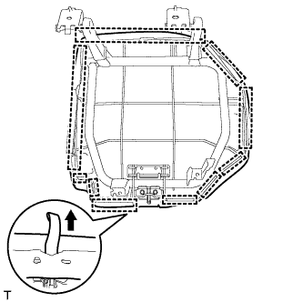 |
Подсоедините крепления, чтобы закрепить обивку подушки сиденья вместе с подушкой.
Подсоедините хомут подушки сиденья к обивке подушки сиденья.
| 19. УСТАНОВИТЕ НИЖНЮЮ КРЫШКУ ПОДУШКИ ЛЕВОГО ЗАДНЕГО СИДЕНЬЯ |
| 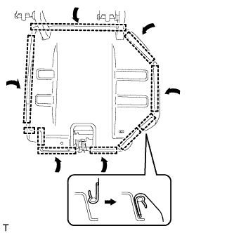 |
Введите в зацепление крепления, чтобы установить обивку.
| 20. УСТАНОВИТЕ ЗАЩИТУ СПИНКИ ЗАДНЕГО СИДЕНЬЯ |
Введите в зацепление 2 крепления, чтобы установить защиту.
Вверните 2 винта.
| 21. УСТАНОВИТЕ ПОДУШКУ ЗАДНЕГО СИДЕНЬЯ |
Закрепите 2 подушки 2 винтами.